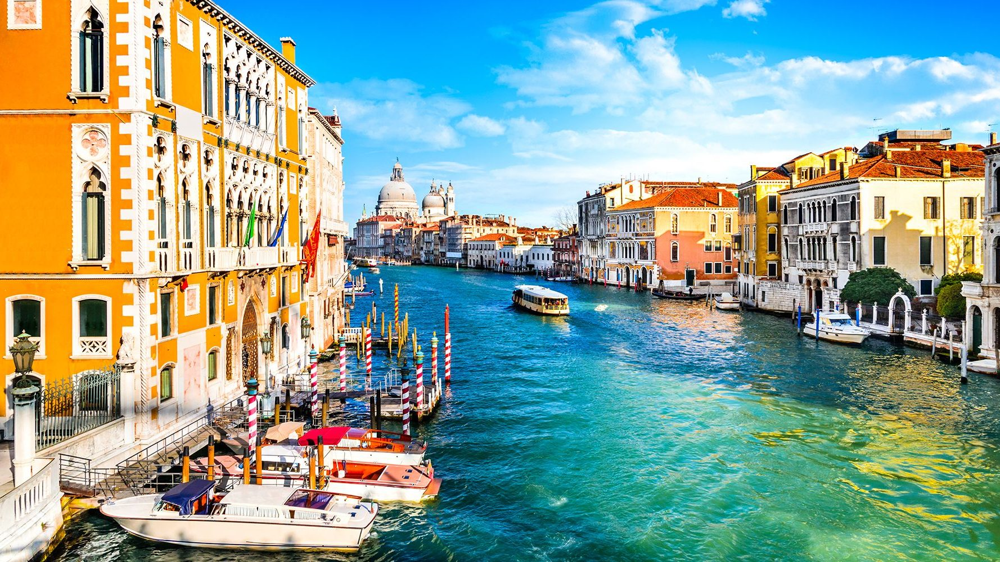

Roma
Roma este capitala Italiei si, cu 2,8 milioane de locuitori si 1.285,3 kmp, este, de asemenea, al patrulea oras ca marime si numar de locuitori din Uniunea Europeana. Roma este deseori mentionata ca "Orasul Etern" sau "Cetatea Eterna" de poetii si scriitorii antici.
Florenta
Florenta este capitala Toscanei si are aproximativ 400.000 de locuitori. Orasul Florenta are o pozitie privilegiata: este situat aproape in centrul peninsulei italiene, pe malurile raului Arno si este inconjurat de plantatii de maslini si vita de vie.
Venetia
Acest oras nu inceteaza sa fascineze si sa uimeasca pe cei care il viziteaza. Venetia este un oras in nord-estul Italiei si este format dintr-un un grup de 118 insule mici, separate prin canale si legate prin poduri. Laguna in care este situat orasul se intinde de-a lungul tarmului, intre gurile raurilor Po si Piave.
Milano
Milano este al doilea cel mai mare oras din Italia si capitala Lombardiei. Orasul are aproximativ 1.300.000 locuitori. Important centru comercial si industrial la nivel international, Milano este cel mai mare al saselea oras din lume si al treilea din Europa, din punct de vedere al capacitatii de a atrage capital strain.